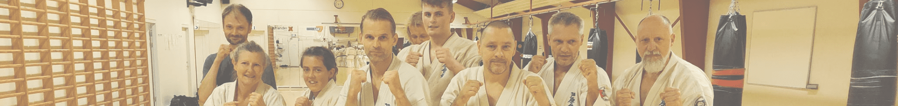
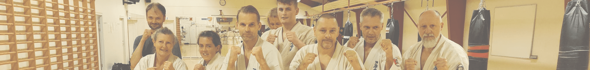
Vores instruktører går op i træningen, klubben og sammenholdet. De har alle sammen en stor passion for karate og har mange års erfaring herfra. Herunder finder du mere information om klubbens instruktører


Sensei Brian er Hadsund Karate Skoles chefinstruktør. Han er gradueret 4. Dan og har trænet siden 1983. Sensei blev gradueret til 4. Dan til DAOs julegraduering 2015. Sensei Brian Hansen har været med klubben hele vejen fra starten og til nu. Han har deltaget i fem verdensmesterskaber og vundet ét verdensmesterskab i fuldkontakt Ashihara.
 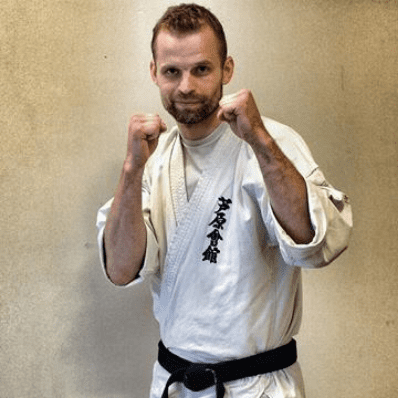
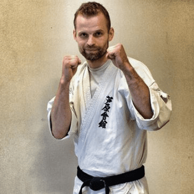
Sensei Allan er gradueret 3. Dan og har trænet siden 1990. Han blev gradueret 2. Dan i 2007 i Japan af Kancho i Honbu i Matsuyama. I 2020 blev han gradueret til 3 Dan af DAO ( Dansk Ashihara Organisation).
 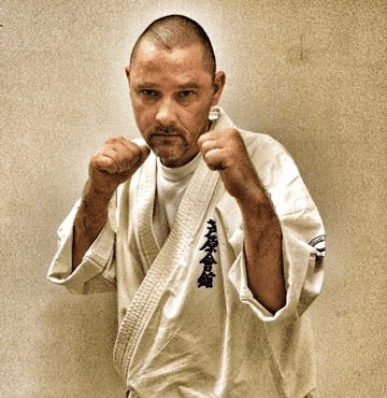
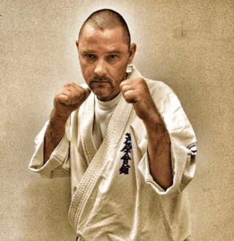
Sensei Jan er gradueret 3. Dan og har trænet siden 2002. Han blev i 2007 gradueret til 1. Dan, i Japan af Kancho i Honbu, Matsuyama. I 2018 blev han gradueret til 2. Dan på DAO sommerlejeren på Bosei i Præstø. I 2023 blev han gradueret til 3. Dan i Randers af DAO.
 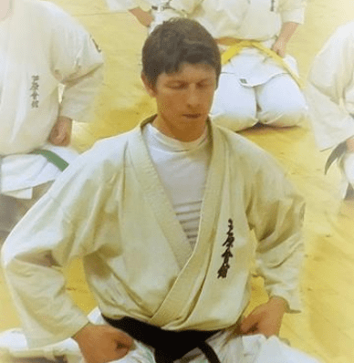
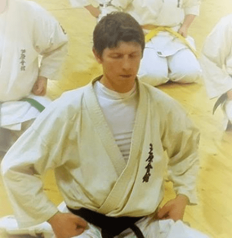
Sempai Richo er gradueret 2. Dan og har trænet siden 1986. Han blev gradueret 2. Dan i 2007 i Japan af Kancho i Honbu i Matsuyama.
 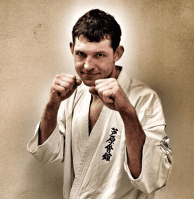
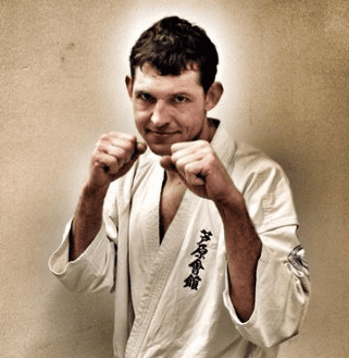
Henrik "Ham selv" er gradueret 2. Kyu. Han har trænet siden 2001. Han blev gradueret 2. Kyu i 2007 i Japan af Kancho i Honbu, Matsuyama.
 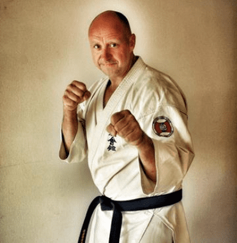
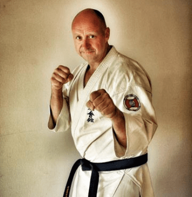
Sempai JC alias Jesper Christensen er gradueret 1. Dan af Kancho på sommerlejren 2015 i Præstø. Jesper er vendt tilbage til Hadsund efter at have trænet forskellige steder i Danmark.